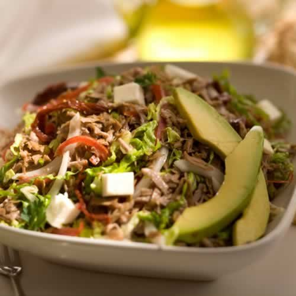

Favoritos


Historial:
Guisado de Carne al Vino Tinto

Preparación
Precaliente el horno a 325 F.
Corte finamente las verduras (zanahoria, apio y cebolla).
También corte el ajo finamente.
Caliente una cacerola grande (que se pueda meter al horno) y selle la carne sobre fuego medio-alto hasta que esté dorada de todos los lados.
Quite de la olla y reserve en un platón.
Quite la grasa extra que se acumulo en la olla y reduzca el fuego a medio-bajo.
Agregue las zanahorias, cebolla y apio y cocine por 2-3 minutos.
Agregue el harina y la pasta de tomate y cocine por 1 minuto, moviendo.
Agregue el vino, el ajo, la sal y pimienta.
Regrese la carne a la cacerola y deje que la mezcla hierva, hasta que el vino se reduzca por 1/3.
Agregue el caldo de res y vuelva a hervir.
Cubra la cacerola y póngala en el horno.
Cocínela por 2-2 ½ horas hasta que la carne esté muy suave.
Saque la carne de la cacerola (cuando ya este lista) y pase el liquido sobrante por un colador.
Regrese el liquido colado a la cacerola y cocine hasta que se reduzca un poco.
Pruebe la salsa y corrija la sal y pimienta si es necesario.
Para servir, corte la carne y póngala en un platón. Ponga la salsa encima de la carne y sirva un poco de salsa extra en un platito.
Precaliente el horno a 325 F.
Corte finamente las verduras (zanahoria, apio y cebolla).
También corte el ajo finamente.
Caliente una cacerola grande (que se pueda meter al horno) y selle la carne sobre fuego medio-alto hasta que esté dorada de todos los lados.
Quite de la olla y reserve en un platón.
Quite la grasa extra que se acumulo en la olla y reduzca el fuego a medio-bajo.
Agregue las zanahorias, cebolla y apio y cocine por 2-3 minutos.
Agregue el harina y la pasta de tomate y cocine por 1 minuto, moviendo.
Agregue el vino, el ajo, la sal y pimienta.
Regrese la carne a la cacerola y deje que la mezcla hierva, hasta que el vino se reduzca por 1/3.
Agregue el caldo de res y vuelva a hervir.
Cubra la cacerola y póngala en el horno.
Cocínela por 2-2 ½ horas hasta que la carne esté muy suave.
Saque la carne de la cacerola (cuando ya este lista) y pase el liquido sobrante por un colador.
Regrese el liquido colado a la cacerola y cocine hasta que se reduzca un poco.
Pruebe la salsa y corrija la sal y pimienta si es necesario.
Para servir, corte la carne y póngala en un platón. Ponga la salsa encima de la carne y sirva un poco de salsa extra en un platito.
Pedro Perez
excelente receta me encanto gracias por compartir :)
Pollo al Vino Tinto
Preparación
Lave el pollo partido en piezas
Con un tenedor mezcle la mantequilla (45 gramos), el vinagre, la sal y pimienta al gusto
Unte esta mezcla sobre el pollo por todos los lados
En una olla grande, ponga a freír el pollo en aceite, empezando por el lado de la piel
Una vez que todo el pollo este doradito, flamee la olla con el ron (con mucho cuidado)
Una vez que la flama del ron se apague, ponga el vino tinto y deje que se evapore, cocinando a fuego medio-bajo por 5 minutos
Agregue el caldo de pollo y las hierbas de olor. Tape y cocine por 15 minutos más
Derrita 45 gramos adicionales de mantequilla y dore el jamón.
Agregue las cebollitas (sin el rabo) con un corte en forma de cruz en su parte superior
Una vez que las cebollitas se vean transparentes, agregue los hongos rebanados
Condimente con sal y pimienta
Agregue todo a la olla con el pollo y deje que se cocine hasta que el pollo este perfectamente cocido
Sirva caliente con arroz blanco
Lave el pollo partido en piezas
Con un tenedor mezcle la mantequilla (45 gramos), el vinagre, la sal y pimienta al gusto
Unte esta mezcla sobre el pollo por todos los lados
En una olla grande, ponga a freír el pollo en aceite, empezando por el lado de la piel
Una vez que todo el pollo este doradito, flamee la olla con el ron (con mucho cuidado)
Una vez que la flama del ron se apague, ponga el vino tinto y deje que se evapore, cocinando a fuego medio-bajo por 5 minutos
Agregue el caldo de pollo y las hierbas de olor. Tape y cocine por 15 minutos más
Derrita 45 gramos adicionales de mantequilla y dore el jamón.
Agregue las cebollitas (sin el rabo) con un corte en forma de cruz en su parte superior
Una vez que las cebollitas se vean transparentes, agregue los hongos rebanados
Condimente con sal y pimienta
Agregue todo a la olla con el pollo y deje que se cocine hasta que el pollo este perfectamente cocido
Sirva caliente con arroz blanco
Alejandra Peña
me encanta esta receta se la prepare a toda mi familia, sigan compartiendo recetas por favor